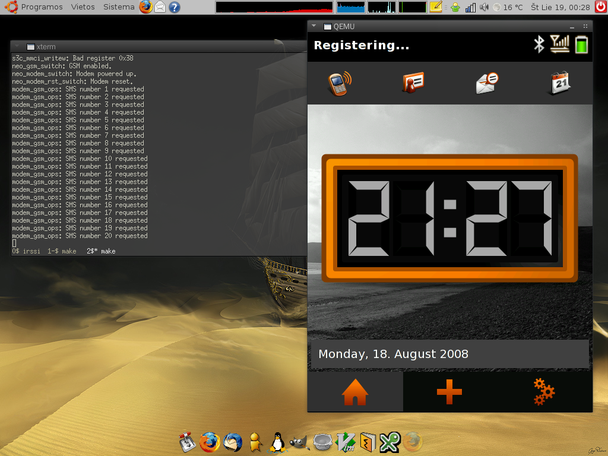
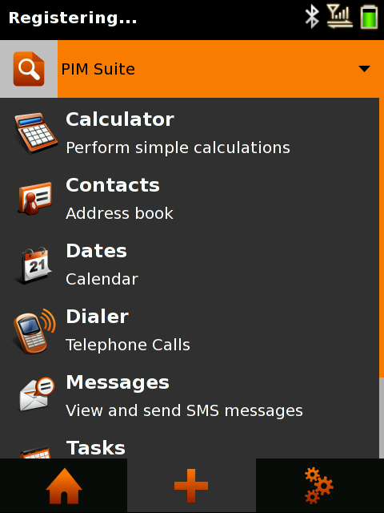
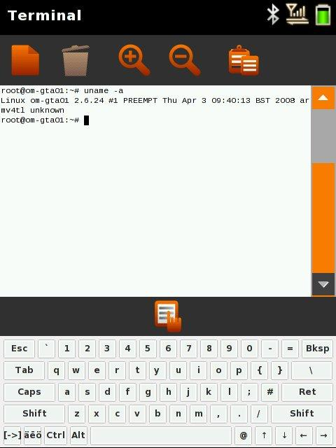
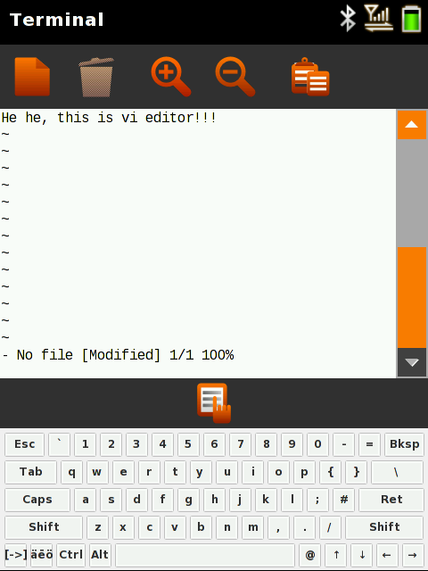

Neo FreeRunner belaukiant…
Pagaliau pasirodė ilgai lauktas Openmoko telefonas: Neo FreeRunner. Šį įrenginį jau užsakiau ir 2-3 savaičių bėgyje turėtu atkeliauti į mano rankas :)
O belaukiant, galima viska išsibandyti emuliatoriuje. Štai kaip tai atrodo:
{kind=link}
Štai instrukcijos kaip tai padaryti (instrukcijos skirtos Ubuntu Gutsy Gibbon operacinei sistemai):
-
Perkonfigūruojame dash paketą, kai jūsų paklaus ar norite pakeisti /bin/sh į dash, atsakykite ne:
sudo dpkg-reconfigure dash
-
Pirmiausiai reikia atitinkamai paruošti Ubuntu sistemą, o tiksliau reikia įdiegti keletą paketų:
sudo apt-get install monotone git-core git-svn git-email \ git-cvs git-arch gitk python-dev ccache m4 sed bison make cvs gawk \ libc6-dev g++ subversion sharutils docbook openjade quilt libmpfr-dev \ libpcre3-dev texinfo texi2html libboost-date-time-dev libboost-filesystem-dev \ libboost-regex-dev libboost-test-dev libboost-dev zlib1g-dev build-essential \ dh-make debhelper devscripts gcc-3.4 lynx netpbm libsdl1.2-dev dosfstools \ help2man python-psyco lynx mtools
-
Susikurkite katalogą, kuriame saugosite visus Openmoko failus:
mkdir openmoko cd openmoko
-
Parsisiunčiame MokoMakefile failą:
wget http://www.rwhitby.net/files/openmoko/Makefile
-
Leidžiame Makefile dirbti savo darbą (tai truks apie 15 min. ir daugiau, priklausomai nuo kompiuterio ir interneto spartos):
make qemu
Po viso šito turėtu pasileisti veikianti Openmoko sistema. Pradžioje, atsidariusiame meniu reikia spausti tarpo klavišą, turėtu būti pažymėta boot.
-
Jei pasileidusi sistema nebus funkcionali, t.y. niekas neveiks, tada reikia atlikt dar sekančius žingsnius:
Uždarykite emuliatorių, jei jis atidarytas.
-
openmoko kataloge paredaguokite build/qemu/openmoko/env failą:
vi build/qemu/openmoko/env
-
Tame faile suraskite mano pavyzdyje užkomentuotas eilutes ir pakeiskite jas atkomentuotomis:
# rootfs_wildcard="Open?oko-openmoko-*image*-om-gta01.rootfs.jffs2" rootfs_wildcard="Openmoko-openmoko-devel-image-glibc-ipk-P1-Snapshot-20080706-om-gta01.rootfs.jffs2" # download_dir="http://buildhost.openmoko.org/daily/neo1973/deploy/glibc/images/neo1973/" download_dir="http://buildhost.openmoko.org/daily/neo1973/200807/20080706/"
-
Atsisiųskite http://buildhost.openmoko.org/daily/neo1973/200807/20080706/Openmoko-openmoko-devel-image-glibc-ipk-P1-Snapshot-20080706-om-gta01.rootfs.jffs2 ir išsaugokite jį images/openmoko/ kataloge:
wget http://buildhost.openmoko.org/daily/neo1973/200807/20080706/Openmoko-openmoko-devel-image-glibc-ipk-P1-Snapshot-20080706-om-gta01.rootfs.jffs2 \ -O images/openmoko/Openmoko-openmoko-devel-image-glibc-ipk-P1-Snapshot-20080706-om-gta01.rootfs.jffs2 -
Paleiskite komandą:
make flash-qemu-official
-
Ir galiausiai paleiskite emuliatorių:
make run-qemu
Visa tai detaliai aprašyta šiuo adresu:
Ko gero smagiausias dalykas yra tas, kad viduje sukas paprasčiausias Linux branduolys ir yra Terminalo programa, kurios pagalba galiu daryti viską, ką ir savo kompiuterio XTerm lange!
Štai daugiau vaizdų, kaip viskas atrodo:
  {kind=link}
{kind=link}
{kind=link}